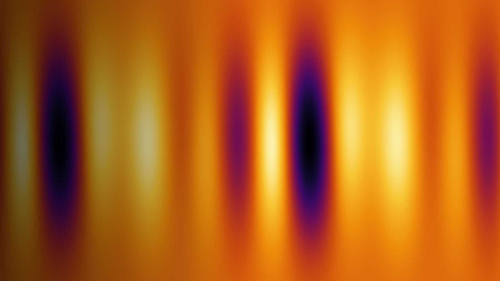

EXPLICA TU TESIS EN 2 MINUTOS
Simulaciones con el código
CUEVA — RRMHD 2D
CUEVA — RRMHD 2D
Tratamiento Numérico de la
Inestabilidad de Kelvin–Helmholtz
bajo el Marco de la
Magnetohidrodinámica Relativista Resistiva
Autores:
Bryan Martinez Anzola · Sebastián Rodriguez Garcia
Director:
Prof. Ph.D. Sergio Miranda-Aranguren
Universidad Distrital Francisco José de Caldas
Facultad de Ciencias Matemáticas y Naturales · Programa Académico de Física
Bogotá, Noviembre de 2026